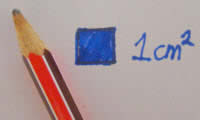

What is Area?
Area is the size of a surface!
Example:
These shapes all have the same area of 9:


It helps to imagine how much paint would cover the shape.
Area of Simple Shapes
There are special formulas for certain shapes:
Example: What's the area of this rectangle?

The formula is:
Area = w × h
w = width
h = height
The width is 5, and the height is 3, so we know w = 5 and h = 3:
Area = 5 × 3 = 15
Learn more at Area of Plane Shapes.
Area by Counting Squares
We can also put the shape on a grid and count the number of squares:

The rectangle has an area of 15
Example: When each square is 1 meter on a side, then the area is 15 m2 (15 square meters)
Square Meter vs Meter Square
The basic unit of area in the metric system is the square meter, which is a square that has 1 meter on each side:

1 square meter
Be careful to say "square meters" not "meters squared":

There are also "square mm", "square cm" and so on, learn more at Metric Area.

Approximate Area by Counting Squares
Sometimes the squares don't match the shape exactly, but we can get an "approximate" answer.
One way is:
- more than half a square counts as 1
- less than half a square counts as 0
Like this:

This pentagon has an area of approximately 17
Or we can count one square when the areas seem to add up.
Example: Here the area marked "4" seems equal to about 1 whole square (also for "8"):

This circle has an area of approximately 14
But using a formula (when possible) is best:
Example: The circle has a radius of 2.1 meters:

The formula is:
Area = π × r2
Where:
- π = the number pi (3.1416...)
- r = radius
The radius is 2.1m, so:
So the circle has an area of 13.85 square meters (to 2 decimal places)
Area of Difficult Shapes
We can sometimes break a shape up into two or more simpler shapes:
Example: What's the area of this Shape?

Let's break the area into two parts:

Part A is a square:
Part B is a triangle. Viewed sideways it has a base of 20m and a height of 14m.
So the total area is:
Area = Area of A + Area of B
Area = 400m2 + 140m2
Area = 540m2
Area by Adding Up Triangles
We can also break up a shape into triangles:

Then measure the base (b) and height (h) of each triangle:

Then calculate each area (using Area = 12× b × h) and add them all up.
Area by Coordinates
When we know the coordinates of each corner point we can use the Area of Irregular Polygons method.
There's an Area of a Polygon by Drawing Tool that can help too.